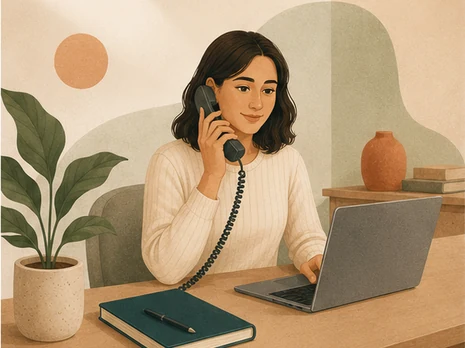

مشاورهای متناسب با شرایط شماCounseling tailored to your situation
هر فرد و هر خانواده شرایط متفاوتی دارد؛ خدمات همنوا بهصورت تخصصی و متناسب با نیاز شما ارائه میشود.Every person and family is different — Hamnavaa's services are tailored to your specific needs.

زوجینCouples
مشاوره زوجینCouples Counseling
مشاوره زوجین جلسهای مشترک برای دو نفر است که به آنها کمک میکند ارتباط سالمتری با هم برقرار کنند، تعارضها را با احترام متقابل حل کنند و درک عمیقتری از نیازها و انتظارات یکدیگر پیدا کنند.Couples counseling is a joint session for two partners that helps them communicate more openly, work through conflict with mutual respect, and better understand each other's needs and expectations.
- الگوهای تکرارشوندهی دعوا و سوءتفاهمRecurring arguments and misunderstandings
- بازسازی اعتماد پس از خیانت یا صداقتنداشتنRebuilding trust after infidelity or dishonesty
- کاهش صمیمیت عاطفی یا جسمیLoss of emotional or physical closeness
- تصمیمگیری دربارهی ادامه یا پایان رابطهDeciding whether to continue or end the relationship
- هماهنگی در سبک زندگی و انتظارات مشترکAligning lifestyles and shared expectations
استرس و اضطرابStress & Anxiety
مشاوره استرس و اضطرابStress & Anxiety Counseling
اگر نگرانی بیشازحد، تنش ذهنی یا فشارهای روزمره زندگی را برایتان سخت کرده، این مشاوره با استفاده از تکنیکهای شناختی-رفتاری و آرامسازی به شما کمک میکند افکار مضطربکننده را بهتر بشناسید و مدیریت کنید.If excessive worry, mental tension, or everyday pressures have become hard to manage, this counseling uses cognitive-behavioral and relaxation techniques to help you recognize and manage anxious thought patterns.
- اضطراب فراگیر و نگرانی مداومGeneralized anxiety and constant worry
- حملات پانیک و علائم جسمی اضطراب (تپش قلب، تنگی نفس)Panic attacks and physical symptoms (racing heart, shortness of breath)
- اضطراب اجتماعیSocial anxiety
- استرس شغلی و فشار کاریWork-related stress and pressure
- مشکلات خواب مرتبط با استرسStress-related sleep difficulties
افسردگیDepression
مشاوره افسردگیDepression Counseling
وقتی خلق پایین، بیانگیزگی یا خستگی مداوم هفتهها ادامه پیدا میکند و کارهای سادهی هر روز را سنگین میکند، دیگر مسئلهی «کمطاقتی» نیست. این مشاوره با روشهای شناختهشدهای مانند درمان شناختی-رفتاری و فعالسازی رفتاری کار میکند: شناختن الگوهای فکری که خلق را پایین نگه میدارند و بازگرداندن تدریجی فعالیتهایی که معنا و انرژی میسازند.When low mood, loss of motivation, or persistent exhaustion lasts for weeks and makes ordinary days heavy, it is not a matter of willpower. This counseling draws on well-established approaches such as cognitive-behavioral therapy and behavioral activation: recognizing the thought patterns that keep mood low, and gradually rebuilding the activities that restore meaning and energy.
- خلق پایین و بیحوصلگی طولانیمدتPersistent low mood and flatness
- از دست دادن لذت و علاقه به کارهای همیشگیLoss of interest and pleasure in usual activities
- اختلال در خواب، اشتها و انرژیChanges in sleep, appetite, and energy
- احساس بیارزشی، گناه و خودانتقادی شدیدFeelings of worthlessness, guilt, and harsh self-criticism
- افسردگی پس از سوگ، طلاق یا مهاجرتDepression following bereavement, divorce, or migration
اگر افکار آسیبرساندن به خود دارید، لطفاً منتظر نوبت نمانید و همین حالا با اورژانس اجتماعی ۱۲۳ یا اورژانس ۱۱۵ تماس بگیرید.If you are having thoughts of harming yourself, please do not wait for an appointment — contact your local emergency number right away.
خانوادهFamily
مشاوره خانوادهFamily Counseling
در مشاوره خانواده بهجای اینکه دنبال «مقصر» بگردیم، به الگوی ارتباطی خودِ خانواده نگاه میکنیم: چه کسی با چه کسی حرف میزند، تصمیمها کجا گرفته میشوند و تنشها معمولاً از کجا شروع میشوند. جلسات میتواند با حضور همهی اعضا یا بخشی از آنها برگزار شود.Family counseling looks at how the family communicates rather than searching for someone to blame: who talks to whom, where decisions get made, and where tension usually begins. Sessions can include the whole family or only some of its members.
- تعارض میان والدین و فرزندانConflict between parents and children
- همسو کردن شیوهی فرزندپروری میان پدر و مادرAligning parenting styles between partners
- مرزگذاری با خانوادهی گسترده و دخالتهای بیرونیBoundaries with the extended family and outside interference
- عبور از بحرانهای مشترک: بیماری، سوگ، طلاق یا مهاجرتGetting through shared crises: illness, grief, divorce, or migration
- زندگی در فاصله و خانوادههای پراکنده میان دو کشورLiving apart, and families spread across two countries
پیش از ازدواجPremarital
مشاوره پیش از ازدواجPremarital Counseling
این مشاوره آزمونی برای «قبول یا رد شدن» نیست؛ فرصتی است تا پیش از تصمیم نهایی، دربارهی موضوعاتی حرف بزنید که معمولاً بعد از ازدواج سر باز میکنند. هدف این است که هر دو نفر تصویر روشنتری از انتظارات، ارزشها و تفاوتهای یکدیگر داشته باشند و بدانند اختلافهایشان را چطور مدیریت کنند.This is not a test to pass or fail. It is a chance, before the final decision, to talk through the things that usually surface after the wedding — so both people have a clearer picture of each other's expectations, values, and differences, and know how they will handle disagreement.
- انتظارات از نقشها و تقسیم مسئولیتهاExpectations about roles and shared responsibilities
- پول، کار و برنامهریزی مالی مشترکMoney, work, and planning finances together
- تصمیم دربارهی فرزندآوری و زمان آنWhether and when to have children
- رابطه با خانوادهی همسر و تفاوتهای فرهنگی یا مذهبیIn-laws, and cultural or religious differences
- شیوهی حل اختلاف و الگوهای برخورد در تنشHow each of you handles conflict and tension
کودک و نوجوانChild & Teen
مشاوره کودک و نوجوانChild & Teen Counseling
روش کار با سن کودک تغییر میکند: با کودکان بیشتر از راه بازی و گفتوگوی ساده، و با نوجوانان در قالب یک فضای امن و محرمانه برای حرف زدن بدون قضاوت. در هر دو حالت، همراهی والدین بخشی از مسیر است — بهویژه برای سنین پایینتر.The approach changes with age: with younger children mostly through play and simple conversation, and with teenagers as a safe, confidential space to talk without judgment. In both cases parents are part of the process — especially for younger children.
- رفتارهای چالشبرانگیز (لجبازی، پرخاشگری)Challenging behavior (defiance, aggression)
- اضطراب و ترسهای کودکانهChildhood anxiety and fears
- سازگاری با تغییرات خانوادگی (طلاق، تولد خواهر یا برادر، مهاجرت)Adjusting to family changes (divorce, a new sibling, relocation)
- مشکلات خواب یا تمرکزSleep or attention difficulties
- بیان احساسات و مهارتهای اجتماعیEmotional expression and social skills
- تعارض با والدین و مرزهای استقلالConflict with parents and boundaries of independence
- فشار تحصیلی و کنکورAcademic pressure and exam stress
- نوسانات خلقی و مدیریت احساساتMood swings and emotional regulation
- روابط دوستانه و فشار همسالانFriendships and peer pressure
- تصویر بدنی و تأثیر شبکههای اجتماعیBody image and social media influence
توسعه فردیPersonal Development
رشد فردی و شناخت خودPersonal growth and self-understanding
توسعه فردی فضایی است برای کار روی خودتان، بدون آنکه لزوماً مشکلی در میان باشد. اینجا دربارهی اهداف، ارزشها، الگوهای تکرارشونده و مسیری که میخواهید بروید صحبت میشود؛ و هدف، ساختن ظرفیت بیشتر برای انتخاب آگاهانه و زندگی رضایتبخشتر است.Personal development is space to work on yourself, without a problem necessarily being the reason you came. It covers goals, values, the patterns that keep repeating, and the direction you want to take — with the aim of building more capacity for deliberate choice and a more satisfying life.
- شناخت بهتر خود و ارزشهای شخصیBetter self-understanding and personal values
- اعتماد به نفس و عزت نفسConfidence and self-esteem
- تصمیمگیریهای مهم زندگی و دورانهای گذارMajor life decisions and transitions
- مدیریت زمان، انگیزه و اهمالکاریTime management, motivation, and procrastination
- تعادل کار و زندگیWork–life balance
روابط بین فردیInterpersonal Relationships
روابط، مرزها و ارتباط مؤثرRelationships, boundaries, and effective communication
بخش بزرگی از رنج روزمره در روابط شکل میگیرد: در خانواده، محل کار، دوستیها و رابطههای عاطفی. در این جلسات روی الگوهای تکرارشوندهی ارتباطی، مرزگذاری، بیان نیاز و مدیریت تعارض کار میشود.A large share of everyday distress takes shape inside relationships — family, work, friendships, romantic life. These sessions work on the communication patterns that keep repeating, on boundaries, on expressing needs, and on handling conflict.
- دشواری در «نه» گفتن و مرزگذاریDifficulty saying no and setting boundaries
- تعارضهای خانوادگی و محل کارFamily and workplace conflict
- الگوهای دلبستگی و رابطههای عاطفیAttachment patterns and romantic relationships
- احساس تنهایی و دشواری در ساختن رابطهLoneliness and difficulty forming connections
- مهارتهای گفتوگو و مدیریت تعارضConversation skills and conflict management
وسواسOCD
وسواس فکری و عملیObsessive-compulsive difficulties
وسواس با افکار مزاحم و تکرارشونده و رفتارهایی که برای کم کردن اضطراب انجام میشوند شناخته میشود. این چرخه معمولاً با تلاش برای کنترل بیشتر، محکمتر میشود. درمان تخصصی روی شکستن همین چرخه تمرکز دارد، نه بر از بین بردن خودِ افکار.OCD is marked by intrusive, repeating thoughts and by behaviours carried out to bring the anxiety down. The cycle usually tightens the harder someone tries to control it. Specialist treatment focuses on breaking that cycle rather than on eliminating the thoughts themselves.
- افکار مزاحم و تکرارشوندهIntrusive, repetitive thoughts
- وسواس شستوشو، وارسی و نظمWashing, checking, and ordering compulsions
- وسواس فکری بدون رفتار آشکارObsessions without visible compulsions
- اضطراب و اجتناب همراه با وسواسAnxiety and avoidance alongside OCD
- اثر وسواس بر خانواده و روابطThe effect of OCD on family and relationships
آمادهاید شروع کنید؟Ready to begin?
یک جلسهی معارفه رایگان ۱۵ دقیقهای رزرو کنید و بدون هیچ تعهدی تصمیم بگیرید.Book a free 15-minute intro session and decide with no obligation.
درخواست معارفه رایگانFree Intro Request